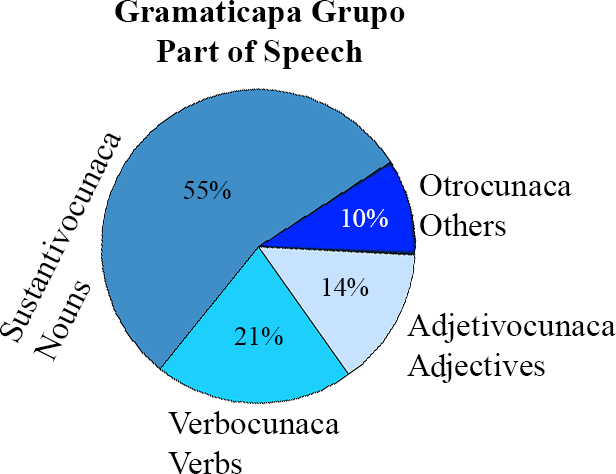
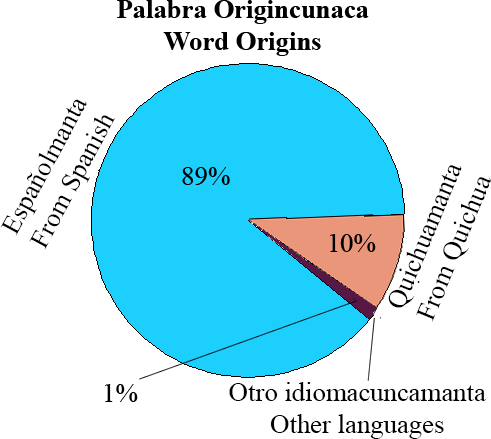
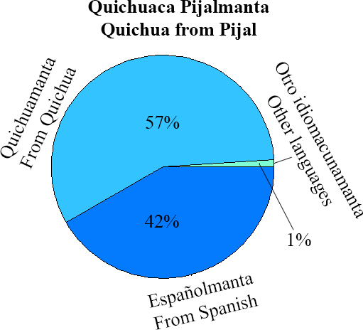

Numerocunaca Diccionariomanta
Basic Stats from this Dictionary
 
Primera letra numerocunaca diccionariopi
First letter counts
| a | 314 | i | 66 | r | 136 | |
| b | 121 | j | 87 | s | 211 | |
| c | 484 | l | 130 | t | 197 | |
| d | 155 | m | 232 | u | 29 | |
| e | 161 | n | 73 | v | 110 | |
| f | 89 | o | 65 | y | 24 | |
| g | 96 | p | 307 | z | 6 | |
| h | 62 | q | 37 | Total | 3192 | |
Sonido numerocunaca diccionariopi pronunciacionmanta
Phoneme and common allophone counts from IPA
| Total | 21153 | | | | | | | | | | |
| Vowels | Count | % | Sonorants | Counts | % | Fricatives | Counts | % | Stops | Counts | % |
| a | 4109 | 19% | m | 651 | 3% | f | 180 | 1% | p | 576 | 3% |
| e | 1650 | 8% | n | 1777 | 8% | s | 1184 | 6% | t | 1026 | 5% |
| i | 1669 | 8% | ɲ (ñ) | 75 | 0.4% | z (ts) | 30 | 0.1% | k | 890 | 4% |
| o | 1851 | 9% | ŋ (n+g/k) | 55 | 0.3% | ʃ (sh) | 223 | 1% | b | 535 | 3% |
| u | 700 | 3% | ɾ (-r-/ -r) | 1069 | 5% | ʒ (ll) | 127 | 1% | d | 733 | 3% |
| | | l | 723 | 3% | ʐ (r-/rr) | 241 | 1% | ɡ (g) | 326 | 2% |
| | | j (y) | 102 | 0.%% | x (j) | 239 | 1% | | | |
| | | w | 73 | 0.3% | ʧ (ch) | 222 | 1% | | | |
| | | | | | β (v, b) | 117 | 1% | | | |
| Total | 9979 | 47% | | 4525 | 21% | | 2563 | 13% | | 4086 | 19% |

Programado y escrito por Jesse Stewart (© 2020)